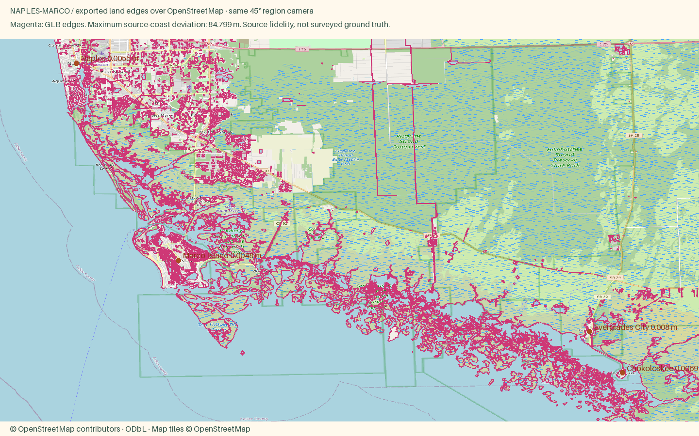
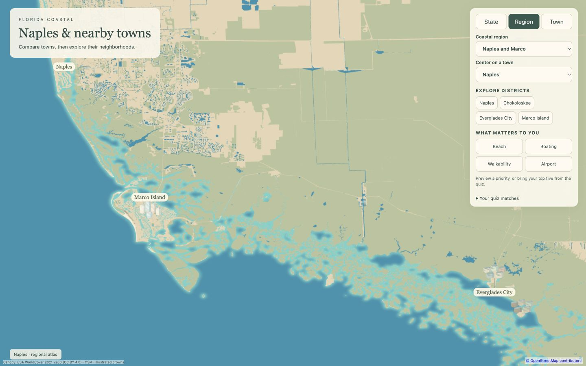
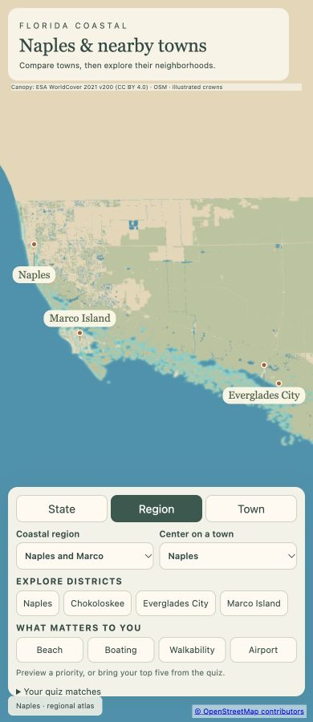

Naples, Marco Island and the Everglades
Open atlas · Accuracy CSV · Sourced medians
Region
Naples
Open districtPolished and peaceful, with golf, boating, a walkable downtown and calm Gulf beaches from the pier north to Vanderbilt Beach.
Chokoloskee
Open districtA tiny shell mound island at the edge of Everglades National Park, the last stop before the Ten Thousand Islands.
Everglades City
Open districtA small fishing town on the Barron River at the edge of Everglades National Park, known for stone crab and as the way into the Ten Thousand Islands.
Marco Island
Open districtThe largest of the Ten Thousand Islands, with a wide crescent beach on one side and wild mangrove country on the other.
Source alignment

Manual fixes
- Everglades City and Chokoloskee use published residential medians with small sample counts explicitly shown; these are not ranges based on two listings.
- Town place-label anchors represent districts; facade colors remain an illustration, not a per-house color survey.
- Existing Census land context continues beyond the OSM data rectangle, avoiding artificial water edges at the package boundary.
- Overpass unavailable for Marco Island: used four OSM API 0.6 map tiles, filtered to the original building/highway selectors to avoid mixing coastline snapshots.
- Camera input fitted to both east-west and north-south district extent; the default north-south-only span cropped Naples and the Everglades on phone. Landing tilt and span unchanged.
- Extended existing Census background land to the wider region camera footprint so the phone frame does not end in an artificial northern water edge.
Landing heroes
All landing images and hero reasons
naples

Phone crop
chokoloskee

Phone crop
everglades-city

Phone crop
marco-island

Phone crop
Viewport checks

